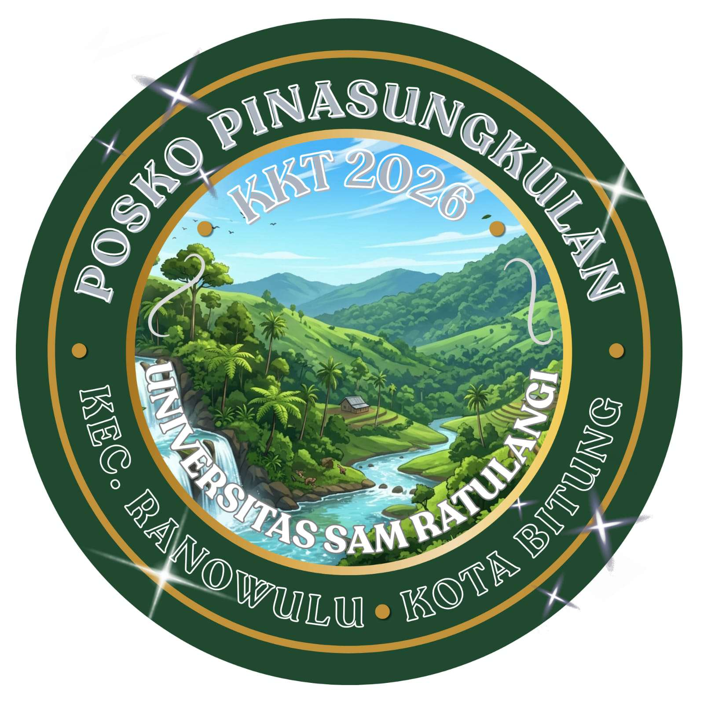

Profil Kelurahan Pinasungkulan
Informasi lengkap mengenai gambaran umum, sejarah singkat, visi dan misi, data kependudukan, serta potensi lokal di Kecamatan Ranowulu, Kota Bitung.

Kantor Posko / KelurahanSekilas Kelurahan Pinasungkulan
Kelurahan Pinasungkulan terletak di Kecamatan Ranowulu, Kota Bitung. Memiliki populasi sebanyak 874 jiwa, wilayah ini dikelilingi oleh potensi sumber daya alam yang melimpah dan semangat masyarakat yang tinggi untuk bergotong royong.
Pemerintah Kelurahan berkomitmen penuh untuk membangun masyarakat yang mandiri, sejahtera, dan berdaya saing melalui efisiensi pelayanan publik serta pengembangan potensi ekonomi lokal berbasis pertanian dan UMKM.
Visi Utama
"Mewujudkan Kelurahan Pinasungkulan yang Mandiri, Sejahtera, Berdaya Saing, dan Berbudaya Berbasis Partisipasi Masyarakat."
Landasan Utama Pembangunan Daerah
Misi Pembangunan
- Meningkatkan kualitas pendidikan dan taraf kesehatan seluruh lapisan masyarakat.
- Mendorong pertumbuhan ekonomi berbasis potensi pertanian dan UMKM lokal.
- Melestarikan lingkungan hidup dan budaya lokal secara berkelanjutan.
- Meningkatkan mutu pelayanan publik yang transparan, akuntabel, dan ramah warga.
Demografi Kependudukan
Distribusi penduduk berdasarkan jenis kelamin.
Distribusi Berdasarkan Umur
| Rentang Umur | Laki-laki | Perempuan | Total |
|---|---|---|---|
| 0 - 15 Tahun | 113 | 90 | 203 |
| 16 - 30 Tahun | 138 | 136 | 274 |
| 31 - 40 Tahun | 64 | 65 | 129 |
| 41 - 60 Tahun | 108 | 100 | 208 |
| 60+ Tahun | 38 | 35 | 73 |
Distribusi Berdasarkan Agama
Data rekapitulasi resmi kependudukan Kelurahan Pinasungkulan.
Pembagian Wilayah (Lingkungan & Rukun Tetangga)
Lingkungan 1 5 RT
Lingkungan 2 3 RT
Fasilitas & Sarana Umum
Daftar fasilitas pendidikan, sarana kerohanian, dan pusat pelayanan masyarakat di Kelurahan Pinasungkulan.
Fasilitas Umum & Pendidikan
Paud Sion
Pendidikan Anak Usia Dini
TK Negeri SATAP Pinasungkulan
Taman Kanak-Kanak Negeri
SD Negeri Pinasungkulan
Sekolah Dasar Negeri
SMP Negeri 17 SATAP Bitung
Sekolah Menengah Pertama
Sarana Kerohanian
GMIM Charisma Pinasungkulan
Tempat Ibadah
GMIM Sion Tinerungan
Tempat Ibadah
GPDI Filadelfia
Tempat Ibadah
GPDI EL OLAM
Tempat Ibadah
Gereja Khatolik ST Yohanes
Tempat Ibadah
Sarana Pelayanan Masyarakat
Kantor Kelurahan Pinasungkulan
Pusat Pemerintahan & Administrasi
Pustu Kelurahan Pinasungkulan
Puskesmas Pembantu
Polindes Kelurahan Pinasungkulan
Pondok Bersalin Desa
Data Wilayah & Batas Geografis
Rincian administrasi batas wilayah Kelurahan Pinasungkulan